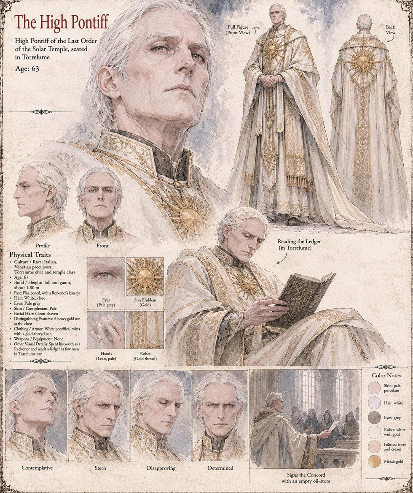

The High Pontiff
High Pontiff of the Last Order of the Solar Temple, seated in Torrelume · once a Reckoner · signatory of the Concord · 63 on the sheet
The Last Order of the Solar Temple administers the Decree under a High Pontiff seated in Torrelume, whose authority descends through the Legates, the Lampwardens and the Reckoners to the lamplighters. In the second Jorren Torrelume, which has lost its patience and gained a High Pontiff who preferred a decision to a debate, grants Gaudenzio’s request for the Great Lighting in nine days, with four hundred barrels of the Order’s blessed oil shipped upriver under seal; the letter that comes before it, from the Pontiff’s own secretary, regrets the decline of the shrimp tithe and says that the High Pontiff has every confidence in the Legate’s judgment. When the Council of Nine Shoals votes six to three to suspend the Reclamation, the Pontiff, who had spent his youth as a Reckoner and could read a ledger as few men in Torrelume could, understands that what lies on the Tribune’s table is not a heresy but a set of accurate figures, and that this is very much the worse of the two. He condemns the book within the week as the Heresy of the Second Ledger and within the fortnight reaches for the Interdict of the Withdrawn Flame; his secretary strikes Agata from the roll.
At the Concord of the Two Lamps in the third autumn of the war the Pontiff has an empty oil-store, and the oil runs out on the third day of the final negotiation. He signs by the light of a single tallow dip held for him, with some difficulty, by the Tribune Domenica Ardizzon, and looks at her steady hand with an expression of the most unfeigned respect. In his last illness the old Pontiff asks for the lay-clerk who carried the drafts between the Chamber and the Temple, and is told that the young man has married a glass-worker’s daughter and gone to Merlara, and says that this is very right of him.
The manuscript gives him no age, build, face or hair, and calls him the old Pontiff at the Concord. The sheet’s age of 63, tall gaunt build of about 1.80 m, fine-boned face, close white hair, pale grey eyes, clean-shaven pale skin, heavy gold sun at the chest and white pontifical robes with a gold-thread sun are its own, as are its panels Contemplative, Stern, Disapproving and Determined and its view Reading the Ledger (in Torrelume). Its scene Signs the Concord with an empty oil-store follows the manuscript, but draws him standing at a table before rows of hooded grey figures under tall windows, where the manuscript has the lower gallery of the Great Beacon and a single tallow dip. Its title follows the manuscript.
“what lay on the Tribune’s table was not a heresy but a set of accurate figures”